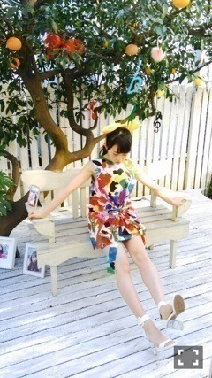
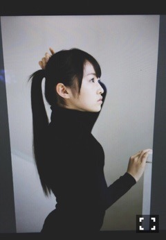

| 2015/03 26 Thu | あそびごころ詰め。 634回目 |
初週50万枚！1位！
ありがとうございます。
これからも
応援よろしくお願いします！
この前は久しぶりの
全国握手会だったよー
初披露だった
あらかじめ語られるロマンス
どうでしたか？
星を描く振りは、
ぜひ一緒にやってほしい！
握手は伊織とペアだった〜
伊織大人っぽいから
どっちが年上だっけ
ってからかわれたー笑
4月15日発売のPOKERFACEに
伊織と一緒に載るよ。
撮影楽しかった〜
モードな感じでした。
そして、チェキ会！
のぎ天のあのポーズが多かった笑
ひたすらシュールだった。
確認できなかったから
写りが悪いかも泣
2ショット大切にしてくださいね。
...
昨日は、受験サプリpresents
『おどる！ うたう！ 大卒業式』
がありました。
また氣志團さんと共演できて
嬉しかったなあ〜
乃木團いつも見てるだけだったけど
今回は一緒に踊ることが
できてよかった！かっこよい！
もうすっかり春、
卒業されたみなさん
本当におめでとうございます。
ライブでは
仰げば尊しを歌いましたが、
自身の卒業式でも歌ったので
思い出しました。
卒業して制服から解放される
嬉しさでいっぱいだったな。
でも学生を見かけると
少し寂しくなったり。
楽しそうだなあと羨ましくなったり。
今はこうして真正面から
仕事に向き合えるのが
とても幸せです！！
もちろん、勉強も大事！
UTBに載ってます！
初めてのソログラビアが
UTBさんだったので、
また呼んでもらえて嬉しかった〜
19歳の記念に撮っていただきました。

これ見覚えある人いるかな？
前のグラビアの写真
デコレーションしてある。

このポニーテールのリボン、
ジブリを感じる。
AKB48新聞の中の乃木坂46新聞
右ページはバースデーライブのこと、
そして左ページはなんと
映画アイズのインタビューが
どーんと載っています。
一面になるとは思わなかったよ！
ぜひ読んでくだ さ い ！！

これ、髪長いねえ
炊飯器壊れてしまったから
圧力鍋で玄米炊いたの。
全然ちがうね！
本当に美味しくて感動して
この3日間くらい
玄米と魚と豚汁と納豆で過ごしてる。
玄米派の方、圧力鍋おすすめ。
まりか
コメント(640)
2015/03/26 00:18